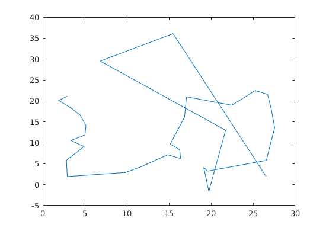
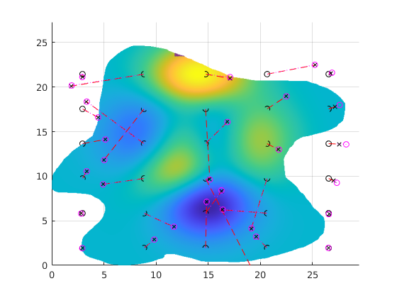

Contents
clear all % tic
Parameter setting
px = 6; % fov x length py = 4; ov_x = 0.1; % overlap length ov_y = 0.1; voxel_width = 0.05; % voxel distance inpection_dist = 7; % Inspection distance eff_x = px - ov_x; % Effective fov size eff_y = py - ov_y;
Load data (Inspection Area Loading)
area = imread('area.png'); area = area~=0; % area = ones(size(area)); area_xl = size(area,2)*voxel_width; % Acutal size[m] of area area_yl = size(area,1)*voxel_width; [voxelPosX, voxelPosY] = meshgrid(linspace(voxel_width, voxel_width*(size(area,2)+1),size(area,2)),linspace(voxel_width, voxel_width*(size(area,1)+1),size(area,1))); areaPosX = voxelPosX; areaPosY = voxelPosY;
Grid Initialization
gridnum_x = ceil(area_xl/eff_x); % required grid size gridnum_y = ceil(area_yl/eff_y); [gridPosX, gridPosY] = meshgrid(eff_x/2:eff_x:eff_x*gridnum_x-eff_x/2,eff_y/2:eff_y:eff_y*gridnum_y-eff_y/2); % grid coordinate gridEdgeX = [gridPosX(1,:)-eff_x/2,gridPosX(end)+eff_x/2]; gridEdgeY = [gridPosY(:,1)'-eff_y/2,gridPosY(end)+eff_y/2];
Curvature generation (Voxel Data Loading)
voxelData = peaks(length(area))*1; voxelData = voxelData(1:size(area,1),1:size(area,2)); % voxelData(200:300,300:430) = nan; % Simulating voxel fault voxelFilterData = area.*voxelData; gridValue = griddata(voxelPosX(:),voxelPosY(:),voxelData(:),gridPosX,gridPosY); voxelFilterData(area==0) = nan; % neglect unselected area
Voxel to grid localization
vg = {};
for i = 1:size(gridPosX,2)
for j = 1:size(gridPosX,1)
% Linear type
vg(i,j).x = voxelPosX(voxelPosX > gridEdgeX(i) & voxelPosX < gridEdgeX(i+1) & voxelPosY > gridEdgeY(j) & voxelPosY < gridEdgeY(j+1) & ~isnan(voxelData));
vg(i,j).y = voxelPosY(voxelPosX > gridEdgeX(i) & voxelPosX < gridEdgeX(i+1) & voxelPosY > gridEdgeY(j) & voxelPosY < gridEdgeY(j+1) & ~isnan(voxelData));
vg(i,j).data = voxelData(voxelPosX > gridEdgeX(i) & voxelPosX < gridEdgeX(i+1) & voxelPosY > gridEdgeY(j) & voxelPosY < gridEdgeY(j+1) & ~isnan(voxelData));
vg(i,j).filterData = voxelData(voxelPosX > gridEdgeX(i) & voxelPosX < gridEdgeX(i+1) & voxelPosY > gridEdgeY(j) & voxelPosY < gridEdgeY(j+1) & ~isnan(voxelFilterData));
vg(i,j).filterX = voxelPosX(voxelPosX > gridEdgeX(i) & voxelPosX < gridEdgeX(i+1) & voxelPosY > gridEdgeY(j) & voxelPosY < gridEdgeY(j+1) & ~isnan(voxelFilterData));
vg(i,j).filterY = voxelPosY(voxelPosX > gridEdgeX(i) & voxelPosX < gridEdgeX(i+1) & voxelPosY > gridEdgeY(j) & voxelPosY < gridEdgeY(j+1) & ~isnan(voxelFilterData));
vg(i,j).null = 0;
% vg(i,j).xlen = length(find(voxelPosX(1,:) > gridEdgeX(i) & voxelPosX(1,:) < gridEdgeX(i+1)));
% vg(i,j).ylen = length(vg(i,j).data)/vg(i,j).xlen;
if isempty(vg(i,j).filterData)
vg(i,j).null = 1;
end
% Mesh type
% vg(i,j).X = reshape(vg(i,j).x,[vg(i,j).xlen,vg(i,j).ylen]);
% vg(i,j).Y = reshape(vg(i,j).y,[vg(i,j).xlen,vg(i,j).ylen]);
% vg(i,j).Data = reshape(vg(i,j).data,[vg(i,j).xlen,vg(i,j).ylen]);
end
end
Local RSM gen.
gridNormVector{size(gridValue,1),size(gridValue,2)} = [];
gridNormVector_lin{size(gridValue,1),size(gridValue,2)} = [];
for i = 1:size(vg,1)
for j = 1:size(vg,2)
if vg(i,j).null == 0
% Linear approximation
coeff = linResponseSurface(vg(i,j).x, vg(i,j).y, vg(i,j).data);
planel = drawLinResponseSurf(coeff,vg(i,j).x,vg(i,j).y);
gridNormVector_lin{j,i} = [coeff(1),coeff(2),-1];
% Quadratic approximation
coeff = quadResponseSurface(vg(i,j).x, vg(i,j).y, vg(i,j).data);
plane = drawQuadResponseSurf(coeff,vg(i,j).x,vg(i,j).y);
temp_x = gridPosX(1,i);
temp_y = gridPosY(j,1);
gridNormVector{j,i} = slopeQuadResponseSurf(coeff,temp_x,temp_y);
else
gridNormVector{j,i} = ones(1,3)*nan;
gridNormVector_lin{j,i} = ones(1,3)*nan;
end
end
end
Air point gen.
airPosX = zeros(size(gridValue)); airPosY = zeros(size(gridValue)); airPosZ = zeros(size(gridValue)); airPosX_lin = zeros(size(gridValue)); airPosY_lin = zeros(size(gridValue)); airPosZ_lin = zeros(size(gridValue)); for i = 1:size(gridNormVector,1) for j = 1:size(gridNormVector,2) airPosX(i,j) = gridPosX(i,j) - inpection_dist * gridNormVector{i,j}(1); airPosY(i,j) = gridPosY(i,j) - inpection_dist * gridNormVector{i,j}(2); airPosZ(i,j) = gridValue(i,j) - inpection_dist * gridNormVector{i,j}(3); airPosX_lin(i,j) = gridPosX(i,j) - inpection_dist * gridNormVector_lin{i,j}(1); airPosY_lin(i,j) = gridPosY(i,j) - inpection_dist * gridNormVector_lin{i,j}(2); airPosZ_lin(i,j) = gridValue(i,j) - inpection_dist * gridNormVector_lin{i,j}(3); end end
Path Planner (Sweep Algorithm)
Sweeping algorithm
tic [short_l,short_axis]= min(size(airPosX)); init_direction = -1; % 1 is up, 0 is down sweep_dir = ones(short_l,1); sweep_dir(1) = init_direction; % short_axis = 1; % short_l = 7; for i = 2:short_l sweep_dir(i) = -sweep_dir(i-1); end sectorX = airPosX; sectorY = airPosY; if short_axis == 1 sectorX = sectorX'; sectorY = sectorY'; for i = 1:short_l if sweep_dir(i) == -1 sectorX(:,i) = flipud(sectorX(:,i)); sectorY(:,i) = flipud(sectorY(:,i)); end end elseif short_axis == 2 for i = 1:short_l if sweep_dir(i) == -1 sectorX(:,i) = flipud(sectorX(:,i)); sectorY(:,i) = flipud(sectorY(:,i)); end end end toc % waypoint alignment sectorX = sectorX(:); sectorY = sectorY(:); sectorX = sectorX(~isnan(sectorX)); sectorY = sectorY(~isnan(sectorY)); net = [sectorX,sectorY]; cost_Sweep = 0; for i = 2:length(net) cost_Sweep = cost_Sweep + euclideanDist(net(i,:),net(i-1,:)); end % Cost Matrix gen. dim = size(net,1); costMatrix = zeros(dim,dim); for i = 1:dim for j = 1:dim costMatrix(i,j) = euclideanDist(net(i,:),net(j,:)); % by distance end end % Nearest Neighborhood Method tic costMatrix(costMatrix == 0) = nan; record = zeros(size(net)); record(1,:) = net(1,:); record(end,:) = net(end,:); %restricted cost_NNM = 0; curridx = 1; costMatrix_temp = costMatrix(:,1:end-1); costMatrix_temp(:,1) = nan; for i = 1:length(net)-2 [~,j]=min(costMatrix_temp(curridx,:)); record(i+1,:) = net(j,:); cost_NNM = cost_NNM + costMatrix_temp(curridx,j); curridx = j; costMatrix_temp(:,j) = nan; end cost_NNM = cost_NNM + costMatrix(curridx,end); %restricted record = vertcat(record,net(end,:)); %restricted toc % toc figure(4) plot(record(:,1),record(:,2))
Elapsed time is 0.001160 seconds. Elapsed time is 0.001217 seconds.
Plot
figure(1) clf hold on % Draw area contourf(voxelPosX,voxelPosY,voxelFilterData); % mesh(voxelPosX,voxelPosY,voxelData-3); % Draw grid line([gridEdgeX;gridEdgeX],[ones(1,length(gridEdgeX))*gridEdgeY(1);ones(1,length(gridEdgeX))*gridEdgeY(end)],'Color','k') line([ones(1,length(gridEdgeY))*gridEdgeX(1);ones(1,length(gridEdgeY))*gridEdgeX(end)],[gridEdgeY;gridEdgeY],'Color','k') % Grid center plot(gridPosX(:),gridPosY(:),'ko') plot(airPosX(:),airPosY(:).*airPosZ(:)./abs(airPosZ(:)),'kx') plot(airPosX_lin(:),airPosY_lin(:).*airPosZ_lin(:)./abs(airPosZ_lin(:)),'mo') xlim([gridEdgeX(1) gridEdgeX(end)]) ylim([gridEdgeY(1) gridEdgeY(end)]) for i = 1:size(gridPosX,1) for j= 1:size(gridPosX,2) plot3([gridPosX(i,j) airPosX(i,j)],[gridPosY(i,j) airPosY(i,j)],[gridValue(i,j) airPosZ(i,j)],'r--') plot3([gridPosX(i,j) airPosX_lin(i,j)],[gridPosY(i,j) airPosY_lin(i,j)],[gridValue(i,j) airPosZ_lin(i,j)],'m:') end end
figure(2) clf hold on grid on mesh(voxelPosX,voxelPosY,voxelFilterData); contour3(voxelPosX,voxelPosY,voxelFilterData); plot3(gridPosX(:),gridPosY(:),gridValue(:),'ko') plot3(airPosX(:),airPosY(:),airPosZ(:),'kx') plot3(airPosX_lin(:),airPosY_lin(:),airPosZ_lin(:),'mo') plot3(vg(3,7).filterX,vg(3,7).filterY,vg(3,7).filterData,'.','MarkerSize',0.1) % Inspection area(voxel) % view(-45,45) line([],[],'Color','k') xlim([gridEdgeX(1) gridEdgeX(end)]) ylim([gridEdgeY(1) gridEdgeY(end)]) % zlim([-7 11]) for i = 1:size(gridPosX,1) for j= 1:size(gridPosX,2) plot3([gridPosX(i,j) airPosX(i,j)],[gridPosY(i,j) airPosY(i,j)],[gridValue(i,j) airPosZ(i,j)],'r--') plot3([gridPosX(i,j) airPosX_lin(i,j)],[gridPosY(i,j) airPosY_lin(i,j)],[gridValue(i,j) airPosZ_lin(i,j)],'m:') end end % addpath('C:\Users\dlawo\Downloads\ACO_Code'); % bestset = load('ACO_restricted'); % bestset = bestset.bestset; % figure(3) % clf % hold on % grid on % line([gridEdgeX;gridEdgeX],[ones(1,length(gridEdgeX))*gridEdgeY(1);ones(1,length(gridEdgeX))*gridEdgeY(end)],'Color','k') % line([ones(1,length(gridEdgeY))*gridEdgeX(1);ones(1,length(gridEdgeY))*gridEdgeX(end)],[gridEdgeY;gridEdgeY],'Color','k') % plot(gridPosX(:),gridPosY(:),'ko') % plot(airPosX(:),airPosY(:),'kx') % plot(airPosX_lin(:),airPosY_lin(:),'mo') % xlim([gridEdgeX(1) gridEdgeX(end)]) % ylim([gridEdgeY(1) gridEdgeY(end)]) % % plot(sectorX,sectorY,'k') % % plot(record(:,1),record(:,2),'k') % % plot(bestset(:,1),bestset(:,2),'k') % mesh(voxelPosX,voxelPosY,voxelFilterData-10,'EdgeAlpha',0.1) % contour(voxelPosX,voxelPosY,voxelFilterData-10) % title('Path result','fontsize',14) % xlabel('X position [m]','fontsize',14) % xlabel('X position [m]') % ylabel('Y position [m]') % % for i = 1:size(gridPosX,1) % for j= 1:size(gridPosX,2) % plot3([gridPosX(i,j) airPosX(i,j)],[gridPosY(i,j) airPosY(i,j)],[gridValue(i,j) airPosZ(i,j)],'r--') % plot3([gridPosX(i,j) airPosX_lin(i,j)],[gridPosY(i,j) airPosY_lin(i,j)],[gridValue(i,j) airPosZ_lin(i,j)],'m:') % end % end % function out = euclideanDist(pos1,pos2) out = sqrt((pos2(2)-pos1(2))^2+(pos2(1)-pos1(1))^2); end